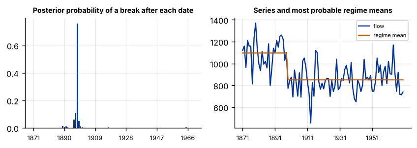

Run this model on your own data in Open Econometric Systems →
Step 1The question and the model
Did the flow of the Nile fall at some point in the twentieth century, and when? The series is the annual flow at Aswan, 1871 to 1970. Hydrologists and statisticians have studied it since Cobb (1978), because the flow seems to drop around 1898, the time of the first Aswan dam works. The question is the same in many applications: a relationship or a level shifted somewhere in the sample, you do not know where, and you want to know how sure you can be that it shifted at all, how many times, and where.
The model divides the sample into regimes by unknown break dates. In each regime \(y_t = x_t'\beta_r + \varepsilon_t\), \(\varepsilon_t \sim N(0, \sigma_r^2)\), with its own coefficients \(\beta_r\) and variance \(\sigma_r^2\) (for the Nile, just a mean level and a variance). The priors are
- on the regime parameters: a conjugate normal-inverse-gamma prior with Zellner's g-prior on the coefficients (\(g = n\), applied to the standardised data) and an inverse-gamma(1, 0.1) prior on the standardised variance, so that each regime's marginal likelihood is available in closed form;
- on the breaks: independently, between any two consecutive observations there is a break with probability \(p\), so that the expected number of breaks is the one number you choose (default 1). Regimes must have a minimum length.
With these priors the posterior over all segmentations can be computed exactly by dynamic programming (Barry and Hartigan 1993; Fearnhead 2006), so the engine reports exact probabilities for the number of breaks and for a break after each date, with no sampler to check. The cost grows with the square of the number of observations, so the limit is 700.
| Output | What it answers |
|---|---|
| Number of breaks | The posterior probability of 0, 1, 2, ... breaks, and the log Bayes factor of each against no break |
| Break dates | The posterior probability of a break after each date, and the table of the highest |
| Regimes | For the single most probable segmentation, the posterior mean, standard deviation and interval of each coefficient in each regime |
| Sensitivity | The same results under other priors on the number of breaks and on the size of the coefficients |
Why not just test for a break?
A sup-F test (Bai and Perron) asks whether the data reject "no break" and then estimates a date with an asymptotic interval that can be wide or odd when the shift is small. The Bayesian answer gives the probability that a break occurred after each date, including the probability of no break, and the intervals are valid in small samples. The price is a prior: the expected number of breaks and the size of the shifts that the prior thinks are plausible. Step 6 shows how much the results depend on it.
How to write it: the model
We search for structural breaks in the mean annual flow of the Nile by Bayesian change-point analysis. Each regime has its own mean and error variance, with a conjugate normal-inverse-gamma prior (a g-prior with \(g = n\) on the standardised series), and the prior on the break dates is an independent Bernoulli(\(p\)) probability for every pair of consecutive years, with \(p\) set so that the expected number of breaks is one and with regimes of at least five years (Barry and Hartigan 1993). The posterior distribution over all segmentations is computed exactly by dynamic programming (Fearnhead 2006). We report the posterior probability of the number of breaks, the probability of a break after each year, and the regime means in the most probable segmentation.
Step 2Load the data
import numpy as np
import pandas as pd
import oes_engine as oes # pip install -e open-econometric-systems/oes-engine
data = open("nile.csv").read()
d = pd.read_csv("nile.csv")
print(d.shape, d["year"].min(), "to", d["year"].max())
print(d["flow"].describe().round(1).loc[["mean", "std", "min", "max"]])
print("mean 1871-1898:", d[d.year <= 1898]["flow"].mean().round(1), " mean 1899-1970:", d[d.year > 1898]["flow"].mean().round(1))(100, 2) 1871 to 1970 mean 919.4 std 169.2 min 456.0 max 1370.0 Name: flow, dtype: float64 mean 1871-1898: 1097.8 mean 1899-1970: 850.0
How to read it
The data are the annual flow, in hundreds of millions of cubic metres, for 100 years. The mean over the whole sample is 919 with a standard deviation of 169, but the two sub-sample means differ by almost a quarter: 1,098 for 1871 to 1898 and 850 for 1899 to 1970. The split date is already the answer the literature gives; here the method has not seen it. Running the analysis without the date is the point of the guide.
Step 3Estimate
spec = dict(y="flow", time="year")
r = oes.run("changepoint", data, spec)
oes.summary(r)
oes.show(r, "Posterior probability of the number of breaks")
oes.plot(r)Observations: 100
Posterior mean number of breaks: 1.079
Most probable number of breaks: 1
P(at least one break): 1.0
Breaks in the most probable segmentation: 1
Dates of the most probable breaks (last date of each regime): 1898
Posterior probability of the number of breaks
Posterior prob. Prior prob. Log Bayes factor against no break
Breaks
0 0.0000 0.3660 0
1 0.9247 0.3697 20.08
2 0.0712 0.1849 17.51
3 0.0039 0.0610 14.6
4 0.0002 0.0149 11.48
5 0.0000 0.0029 8.11
6 0.0000 0.0005 4.44
7 0.0000 0.0001 0.48
8 0.0000 0.0000 -3.8
9 0.0000 0.0000 -8.41
10 0.0000 0.0000 -13.4
Note: Exact (no simulation): all segmentations with at most 10 breaks and segments of at least 5 observations are summed. The prior puts an independent break probability of 0.0101 between consecutive observations (expected number of breaks 1).
How to read it
The posterior probability of exactly one break is 0.925, of two breaks 0.071 and of three 0.004; the probability of no break is below 0.00005, and the posterior mean number of breaks is 1.08. The last column is the log Bayes factor against no break: one break is favoured by 20.1 log points (a factor of about \(5 \times 10^8\), far beyond "decisive" on Jeffreys' scale), two breaks by 17.5, which is less, so the data prefer one break over two by 2.6 log points. The prior puts 0.37 on no break and 0.37 on one, so the data have moved nearly all the probability to one break.
The bar chart is the probability of a break after each year. It is concentrated in one place, around 1898, and almost zero elsewhere. The second chart, drawn below, shows the series with the mean of each regime.
Step 4Where is the break?
oes.show(r, "Posterior probability of a break")
oes.show(r, "Most probable segmentation")Posterior probability of a break after each date (10 highest)
Before Posterior prob.
After
1898 1899 0.7601
1897 1898 0.1108
1896 1897 0.0608
1899 1900 0.0516
1889 1890 0.0137
1900 1901 0.0106
1891 1892 0.0105
1890 1891 0.0076
1901 1902 0.0036
1965 1966 0.0036
Most probable segmentation: coefficients in each regime
Period Observations Parameter Mean Std. dev. 2.5% 97.5% Residual s.d.
Regime
1 1871 to 1898 28 const 1095.9837 25.2923 1046.0814 1145.8860 134.5018
2 1899 to 1970 72 const 850.6591 14.5898 821.9839 879.3344 124.4159
Note: Posterior of each regime given the segmentation with the highest posterior probability (1 break; log posterior of the segmentation relative to no break: 19.81).How to read it
The probability of a break after 1898 (so that 1899 is the first year of the low regime) is 0.760. A break after 1897 has probability 0.111, after 1896 0.061 and after 1899 0.052: together these four years hold 98% of the probability, so the date is known within about three years, and no other year has more than 0.014. The table below is the most probable segmentation: a mean of 1,096 (posterior standard deviation 25) up to 1898, and 851 (15) from 1899, a fall of 245 units or 22%. The regime means are close to the sample means (1,098 and 850); the prior pulls them very slightly towards the overall mean. The residual standard deviation is 135 in the first regime and 124 in the second: the fall in mean was not accompanied by a change in variability.
State a date as a probability, not as a number: "the break occurred in 1898 with probability 0.76 and in 1895 to 1899 with probability 0.98".
Step 5Compare with Bai-Perron
b = oes.run("bp", data, dict(y="flow", time="year"))
oes.show(b, "Estimated break dates")
oes.show(b, "Regimes")Estimated break dates
First observation of the new regime 95% confidence interval 90% half-width (obs.) 95% half-width (obs.)
Break
1 1899 1895 to 1903 2.3 3.3
Note: Intervals follow Bai (1997) and Bai and Perron (2003): the limiting distribution of the break date under a shrinking shift, with a Newey-West long-run variance so that serially correlated errors widen the interval. They are wide when the shift is small relative to the noise.
Regimes of the model with 1 break(s)
From To Observations const
Regime
1 1871 1898 28 1097.75 (26.1291)
2 1899 1970 72 849.9722 (16.2879)
Note: Coefficients with Newey-West standard errors in parentheses, estimated separately in each regime.How to read it
The Bai-Perron procedure (Step on structural breaks in the Time-Series Guide) selects one break, dated 1899 as the first year of the new regime, the same date as the Bayesian most probable segmentation (after 1898). Its 95% confidence interval is 1895 to 1903, wide and asymmetric, against the Bayesian four-year spread; the two are different objects (a confidence interval from a limiting distribution against a posterior probability). The regime means are close (1,097.8 and 850.0 for Bai-Perron, 1,096 and 851 for the Bayesian analysis, which shrinks them slightly towards the overall mean). The two methods agree about the number and the date; the Bayesian result adds the probability of each alternative.
Step 6Robustness: the prior and the minimum regime length
oes.show(r, "Prior sensitivity")
rows = []
for m in (5, 10, 15, 25):
rm = oes.run("changepoint", data, dict(spec, min_segment=m))
s = {x["label"]: x["value"] for x in rm["summary"]}
rows.append([m, s["P(at least one break)"], s["Most probable number of breaks"], s["Dates of the most probable breaks (last date of each regime)"]])
print(pd.DataFrame(rows, columns=["min. regime length", "P(break)", "most probable number", "break date"]))Prior sensitivity
Prior scale c P(at least one break) Most probable number Posterior mean number
Expected breaks (prior)
0.5 10 1.0 1 1.06
0.5 100 1.0 1 1.04
0.5 1000 1.0 1 1.02
1 10 1.0 1 1.13
1 100 1.0 1 1.08
1 1000 1.0 1 1.03
2 10 1.0 1 1.29
2 100 1.0 1 1.17
2 1000 1.0 1 1.06
4 10 1.0 1 1.70
4 100 1.0 1 1.36
4 1000 1.0 1 1.13
Note: Rows re-run the exact calculation with other priors on the number of breaks and on the size of the coefficients.
min. regime length P(break) most probable number break date
0 5 1.0 1 1898
1 10 1.0 1 1898
2 15 1.0 1 1898
3 25 1.0 1 1898How to read it
The first table re-runs the exact calculation with 12 combinations of the prior expected number of breaks (0.5, 1, 2 and 4) and the prior scale of the regime means (n/10, n and 10n). The probability of at least one break is 1.0 in every row, one break is the most probable number in every row, and the posterior mean number of breaks varies from 1.02 to 1.70, the highest where the prior expects four breaks and the coefficient prior is tight. The second table varies the minimum regime length from 5 to 25 years: the result is the same, one break after 1898 with probability one. Nothing in the conclusion depends on the prior.
Step 7Diagnostics: does it raise false alarms?
A method that always finds a break is useless. Simulate 60 series of 100 independent normal observations, with no break, and see how often the posterior probability of a break is high.
rng = np.random.default_rng(0)
p_break = []
for s in range(60):
sim = pd.DataFrame({"t": np.arange(100), "y": rng.normal(size=100)})
rs = oes.run("changepoint", sim.to_csv(index=False), dict(y="y", time="t"))
p_break.append(next(x["value"] for x in rs["summary"] if x["label"] == "P(at least one break)"))
p_break = np.array(p_break)
print("series with no break:", len(p_break), " P(break) above 0.5 in", int((p_break > 0.5).sum()), "of them; mean P(break):", p_break.mean().round(3), " largest:", p_break.max().round(3))series with no break: 60 P(break) above 0.5 in 0 of them; mean P(break): 0.077 largest: 0.409
How to read it
In none of the 60 series without a break did the posterior probability of at least one break exceed 0.5, and the largest value was 0.41; the average was 0.077. With the prior probability of 0.63 of at least one break (the prior expected number of breaks is one), the data pulled the probability down to under 0.1 on average. The method does not invent breaks in noise. The reverse check, whether it finds a break that is there, is the Nile itself, and the test suite checks both with Monte Carlo experiments.
Step 8When the relationship changes: the Phillips curve
A break can be in a relationship and not just in a mean. The data are quarterly U.S. inflation and unemployment, 1959 to 2009 (202 quarters). Each regime has its own constant, its own slope on unemployment and its own variance; regimes must last at least 24 quarters (six years).
macro = open("us_macro.csv").read()
ph = oes.run("changepoint", macro, dict(y="inflation", x=["unemp"], time="date", min_segment=24))
oes.summary(ph)
oes.show(ph, "Posterior probability of the number of breaks")
oes.show(ph, "Posterior probability of a break")
oes.show(ph, "Most probable segmentation")
bpm = oes.run("bp", macro, dict(y="inflation", x=["unemp"], time="date", trim="0.10", max_breaks=5))
oes.show(bpm, "Estimated break dates")
oes.show(bpm, "Regimes")Observations: 202
Posterior mean number of breaks: 5.026
Most probable number of breaks: 5
P(at least one break): 1.0
Breaks in the most probable segmentation: 5
Dates of the most probable breaks (last date of each regime): 1967Q2, 1973Q2, 1984Q1, 1990Q4, 2003Q3
Posterior probability of the number of breaks
Posterior prob. Prior prob. Log Bayes factor against no break
Breaks
0 0.0000 0.3670 0
1 0.0000 0.3688 22.78
2 0.0000 0.1844 67.65
3 0.0000 0.0612 74.68
4 0.0009 0.0151 82.01
5 0.9718 0.0030 89.03
6 0.0273 0.0005 85.46
7 0.0000 0.0001 70.69
8 0.0000 0.0000 not possible
Note: Exact (no simulation): all segmentations with at most 8 breaks and segments of at least 24 observations are summed. The prior puts an independent break probability of 0.0050 between consecutive observations (expected number of breaks 1).
Posterior probability of a break after each date (10 highest)
Before Posterior prob.
After
1973Q2 1973Q3 0.6521
2003Q3 2003Q4 0.4298
1972Q4 1973Q1 0.3356
1967Q2 1967Q3 0.3262
1990Q4 1991Q1 0.2915
1984Q1 1984Q2 0.2336
1990Q3 1990Q4 0.2258
1991Q1 1991Q2 0.2242
1983Q4 1984Q1 0.2010
1966Q4 1967Q1 0.1906
Most probable segmentation: coefficients in each regime
Period Observations Parameter Mean Std. dev. 2.5% 97.5% Residual s.d.
Regime
1 1959Q2 to 1967Q2 33 const 1.2113 0.2472 0.7240 1.6987 1.1285
1 1959Q2 to 1967Q2 33 unemp -0.7562 0.2190 -1.1880 -0.3244
2 1967Q3 to 1973Q2 24 const 3.8681 0.4546 2.9703 4.7659 1.4183
2 1967Q3 to 1973Q2 24 unemp -0.6527 0.2871 -1.2198 -0.0856
3 1973Q3 to 1984Q1 43 const 10.5180 0.5118 9.5103 11.5256 2.3999
3 1973Q3 to 1984Q1 43 unemp -1.7841 0.2424 -2.2612 -1.3069
4 1984Q2 to 1990Q4 27 const 4.3606 0.4085 3.5545 5.1667 1.9297
4 1984Q2 to 1990Q4 27 unemp -1.1119 0.4466 -1.9933 -0.2305
5 1991Q1 to 2003Q3 51 const 2.5167 0.1375 2.2462 2.7871 0.9452
5 1991Q1 to 2003Q3 51 unemp 0.0790 0.1217 -0.1604 0.3184
6 2003Q4 to 2009Q3 24 const 2.5059 0.7131 1.0977 3.9142 3.448
6 2003Q4 to 2009Q3 24 unemp -0.4907 0.5038 -1.4855 0.5042
Note: Posterior of each regime given the segmentation with the highest posterior probability (5 breaks; log posterior of the segmentation relative to no break: 84.39).
Estimated break dates
First observation of the new regime 95% confidence interval 90% half-width (obs.) 95% half-width (obs.)
Break
1 1968Q2 1967Q4 to 1968Q4 1.2 1.8
2 1973Q3 1973Q2 to 1973Q4 0.6 0.9
3 1979Q1 1977Q4 to 1980Q2 2.8 4.1
4 1984Q1 1983Q4 to 1984Q2 0.3 0.4
5 1993Q2 1991Q2 to 1995Q2 5.0 7.3
Note: Intervals follow Bai (1997) and Bai and Perron (2003): the limiting distribution of the break date under a shrinking shift, with a Newey-West long-run variance so that serially correlated errors widen the interval. They are wide when the shift is small relative to the noise.
Regimes of the model with 5 break(s)
From To Observations const unemp
Regime
1 1959Q2 1968Q1 36 6.4508 (0.8945) -0.8947 (0.1642)
2 1968Q2 1973Q2 21 8.7922 (0.9905) -0.8395 (0.2131)
3 1973Q3 1978Q4 22 18.7919 (1.9903) -1.5974 (0.3047)
4 1979Q1 1983Q4 20 27.5988 (1.4558) -2.4567 (0.1732)
5 1984Q1 1993Q1 37 9.603 (1.5803) -0.9029 (0.2514)
6 1993Q2 2009Q3 66 4.1853 (1.4309) -0.3179 (0.2788)
Note: Coefficients with Newey-West standard errors in parentheses, estimated separately in each regime.How to read it
The posterior probability of exactly five breaks is 0.972 (six: 0.027): the number of breaks is well determined, with a log Bayes factor of 89 against no break. The dates are much less certain. The single most probable date, after 1973Q2, has a probability of only 0.65, the next, after 2003Q3, has 0.43, and the others (1967Q2, 1972Q4, 1984Q1, 1990Q4) between 0.23 and 0.34, because adjacent quarters trade off against each other and several segmentations are nearly as good.
The most probable segmentation shows the Phillips curve changing. The slope (in percentage points of inflation per point of unemployment) is \(-0.76\) in 1959 to 1967 and \(-0.65\) in 1967 to 1973; it triples to \(-1.78\) in 1973 to 1984 (interval \(-2.26\) to \(-1.31\)), when the level of inflation at average unemployment was 10.5%; it falls to \(-1.11\) in 1984 to 1990; and it is flat from 1991 to 2003 (0.08, interval \(-0.16\) to 0.32) with inflation at 2.5%, and uncertain in the last, short regime (\(-0.49\), interval \(-1.49\) to 0.50). The residual standard deviation was highest in 1973 to 1984 (2.4) and lowest in 1991 to 2003 (0.95).
Bai-Perron on the same data also selects five breaks, at 1968Q2, 1973Q3, 1979Q1, 1984Q1 and 1993Q2 (first quarter of each new regime). The two methods agree on the count and on 1973Q3 and 1984, and on the flat curve in the last long regime (\(-0.32\), standard error 0.28, against the Bayesian 0.08). They disagree about the other dates, and both say those dates are poorly determined: the Bai-Perron interval for the last break runs from 1991Q2 to 1995Q2. (The Bai-Perron constants are intercepts at zero unemployment, so they cannot be compared with the Bayesian ones, which are the level at the average unemployment rate of the sample.) A caution: the model assumes independent errors, and inflation is persistent, so serial correlation can make the number of breaks appear larger than it is. Treat the number as an upper reading and check it with the HAC-robust Bai-Perron tests.
Step 9Write the results
How to write it: results
The Bayesian change-point analysis finds one break in the annual flow of the Nile, with posterior probability 0.925 for exactly one break and a log Bayes factor of 20.1 against none. The break occurred after 1898 with probability 0.76 and after 1896 to 1899 with probability 0.98. The mean flow fell from 1,096 (posterior standard deviation 25) to 851 (15), a fall of 22%, and the variance did not change. The result is the same for prior expected numbers of breaks from 0.5 to 4, prior scales from n/10 to 10n and minimum regime lengths of 5 to 25 years, and it agrees with the Bai-Perron estimate (1899, 95% interval 1895 to 1903). In 60 simulated series without a break, the posterior probability of a break never exceeded 0.41. For the Phillips curve, the probability of five breaks is 0.97, but the dates are uncertain (the highest, after 1973Q2, has probability 0.65); the slope of the curve is \(-1.8\) in 1973 to 1984 and statistically zero in 1991 to 2003.
| Report | What | Where |
|---|---|---|
| Priors | Expected number of breaks, minimum regime length, prior on the coefficients and variances | Step 1 |
| Number of breaks | Posterior probabilities, log Bayes factors | Step 3 |
| Dates | Probability of a break after each date | Step 4 |
| Regimes | Coefficients, intervals and variances in the most probable segmentation | Step 4 |
| Comparison | Bai-Perron break dates and intervals | Steps 5 and 8 |
| Robustness | Other priors and minimum regime lengths | Step 6 |
| Calibration | False-alarm rate on simulated series | Step 7 |
References. Barry and Hartigan (1993), Journal of the American Statistical Association; Fearnhead (2006), Statistics and Computing; Chib (1998), Journal of Econometrics; Bai and Perron (1998), Econometrica; Cobb (1978), Biometrika; Balke (1993), Journal of Business and Economic Statistics; Stock and Watson (1999), Journal of Monetary Economics.